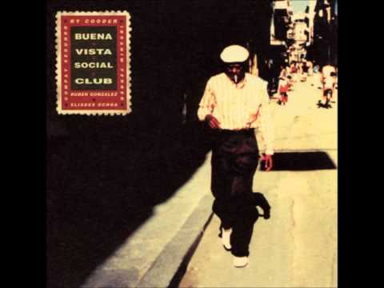
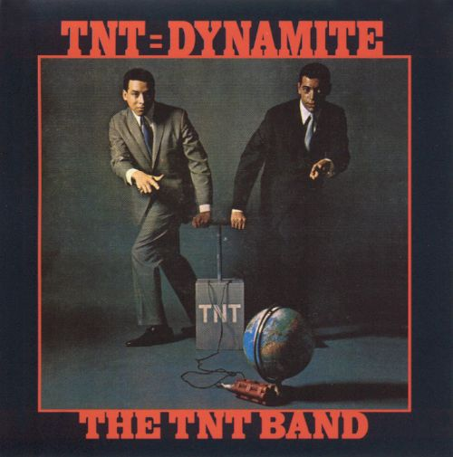
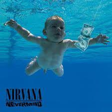

Chargé de communication chez Createch ingenierie depuis 1 an.
Creation de la business unit en septembre prochain en charge du développement web dans la cybersécurité.
|  |
1997 - Chan ChanDe Alto Cedro voy para Marcané
|
|  |
2012 - Sabre OlvidarSufro mucho al saber que no te has muerto
|
|  |
1991 - Come as you areCome as you are, as you were, as I want you to be
|